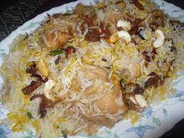
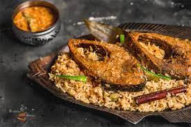
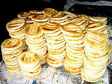

Our Recepies...
We are offering native Bangladeshi Foods. Almost Every Kinds of Bangladeshi Famous and delicious Foods are available here. You will very glad to know that we are offering not only special or delicious foods but also out traditional foods..

Kacci Biriani
Kacchi Biryani recipe is the highly attractive to the food lovers of bangladesgh. ... dish at the time of meal to serve the mutton kacchi biryani hot and with flavor.

Hilsa Fish
Hei! we Are Offering Hilsa Fish Which is our national fish.bangladeshi surma ilish is popular in the whole continent. ou can taste various kinds of ilish recepie here..

Bakorkhani
bakarkhani is the the name of tradition. The bangal emperors used it to take their breakfast with milk tea. which is still very popular in the Old dhaka ...